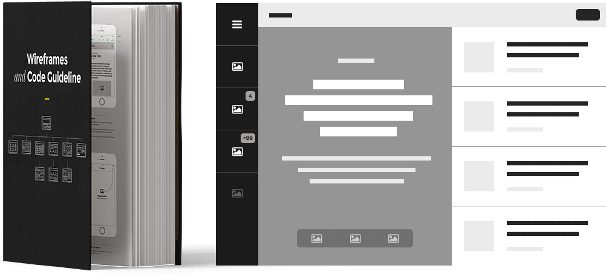

WANT TO WORK WITH US? team@brainaux.com
Full stack Developer /
Project Manager
Project manager with strong technical and web / mobile development background. Good in keeping control of project tasks, time and the overall project status. Strong scoping skills in building and maintaining roadmaps. Strong product discovery skills like client interviews, dev interviews, understanding of business, requirements and technology. Very good in working with both, small and big teams and projects. He is always directly involved in the development of the products, both Back-end and Front-end.
20+ years
Knowledge and experience in agile project management (SCRUM) using Team Foundation Server. Knowledge and experience in complete project and team planning.
Microsoft .NET Framework, ASP.NET MVC, .NET Core, Web Forms, WPF, Web API, SignalR, NHibernate, Entity Framework, C#, C++, VB.NET, Java, NodeJS, Socket.IO, WebRTC, RabbitMQ
HTML5/CSS3, Sass, Less, JavaScript, TypeScript, Angular, React, Vue, Electron, NodeJS, Webpack, and more
iOS SDK, Objective-C, Swift, Android SDK, Windows 10 SDK / WP 8 SDK, HTML5 Hybrid Mobile: Sencha Touch, PhoneGap
Microsoft SQL Server, Oracle, MySQL, PostgreSQL, Apache Cassandra, MongoDB, Redis
Microsoft Azure, Amazon Cloud, Rackspace, Dedicated / VPS / Shared hosting: (Windows Servers, Linux Servers)
Selenium, JMeter, xUNIT, NetSparker, Swagger
Microsoft TFS, MsBuild & Visual Studio, AppVeyor CI, PowerShell, TeamCity
New Relic, Google Analytics, Our custom solutions
Backend Software Engineer Lead
Backend software engineer guru. Designs custom highly scalable solutions on top of the newest technologies like WebRTC, SignalR, NodeJS, Turn/Stun servers, hosted on Azure Cloud. Capable of writing secure code, with a passion for incremental improvements. Excellent understanding of different scalability techniques including caching, practical experience in test-driven development and agile projects. Advanced understanding of all OOP principles and best practices. Very good at performance tweaking on all levels, DB, server and client side.
20+ years
VB.NET, VB.NET Windows Forms, VB.NET Windows Web applications, C#, C++, OOP programming in C++
Microsoft® Certified Professional Developer (MCPD), (MCTS): .NET Framework 4, Web Applications, (MCTS): .NET Framework 4, Service Communication Applications, (MCTS): .NET Framework 4, Data Access
Microsoft .NET Framework, ASP.NET MVC, .NET Core, Web Forms, WPF, Web API, SignalR, NHibernate, Entity Framework, C#, C++, VB.NET, Java, NodeJS, Socket.IO, WebRTC, RabbitMQ
HTML5, JavaScript, JQuery, jsRender, jsViews, RequireJS
iOS SDK, Objective-C, Swift, Android SDK, PhoneGap
Microsoft SQL Server, Oracle, MySQL, PostgreSQL, Apache Cassandra, MongoDB, Redis
Microsoft Azure, Amazon Cloud, Rackspace, Dedicated / VPS / Shared hosting: (Windows Servers, Linux Servers)
Selenium, JMeter, xUNIT, NetSparker, Swagger
Microsoft TFS, MsBuild & Visual Studio, AppVeyor CI, PowerShell, TeamCity
New Relic, Google Analytics, Our custom solutions
UI/UX/Product Designer
Front-End Developer
Almost two decades of crafting responsive sites that provide an optimal viewing and interaction experience across a wide range of devices (desktop and mobile phones). Strong awareness of the latest UI/UX Front-End technology trends. More than a decade of product design and consulting. Very good at interpreting requirements, creating user interaction flow mock-ups, development of high level detailed storyboards and wireframes to communicate interaction and design ideas with the clients.
20+ years
Responsive design for web and mobile, HTML5 / CSS3 / Sass, Dynamic website with PHP, JavaScript and XML / JSON and SPA with Angular
VUE Testing Adobe Certified Expert - Dreamweaver - Photoshop - Illustrator - After Effects. W3Schools Certifications in JavaScript and HTML5. CompTIA Certified Technical Trainer (CTT+)
PHP, WordPress Themes, Custom WordPress Theme Manager, WordPress widgets development.
HTML5/CSS3, Sass, Less, JavaScript, TypeScript, Angular, React, Vue, Electron, NodeJS, Webpack, Photoshop, Illustrator, After Effects, Sketch, Autodesk SketchBook, SMIL Animations, Canvas graphics drawing and animation, Maya & 3ds Max, InDesign, etc.
Complete Interface solution for iOS SDK, Android SDK, Windows 10 SDK / WP 8 SDK, HTML5 Hybrid Mobile: (Ionic, Apache Cordova, Sencha Touch), PhoneGap
MySQL
Microsoft TFS
Google Analytics, Our custom solutions
Microsoft .NET Framework,
ASP.NET MVC, .NET Core, Web Forms,
WPF, Web API, SignalR,
NHibernate, Entity Framework,
C#, C++, VB.NET, PHP, Java,
NodeJS, Socket.IO, WebRTC, RabbitMQ
HTML5/CSS3,
Sass, Less,
JavaScript, TypeScript,
Angular, React, Vue, Polymer, EmberJS, BackboneJS,
jsRender, jsViews, RequireJS,
NPM, Gulp, JSPM
iOS SDK, Objective-C, Swift,
Android SDK,
Windows 10 SDK / WP 8 SDK,
HTML5 Hybrid Mobile:
(Ionic, Apache Cordova, Sencha Touch),
PhoneGap
Microsoft SQL Server,
Oracle,
MySQL,
PostgreSQL,
Apache Cassandra,
MongoDB,
Redis
Microsoft Azure,
Amazon Cloud,
Rackspace,
Dedicated / VPS / Shared hosting:
(Windows Servers, Linux Servers)
Selenium,
JMeter,
Jasmine, Mocha, QUnit,
xUNIT,
NetSparker,
Swagger
Microsoft TFS,
MsBuild & Visual Studio,
AppVeyor CI,
PowerShell,
TeamCity
New Relic,
Google Analytics,
Our custom solutions
Wireframes are created for the purpose of arranging elements to best accomplish a particular purpose. It usually lacks typographic style, color, or graphics, since the main focus lies in functionality, behavior, and priority of content
Based on the wireframes, a graphical layout of the proposed elements is produced. This step describes functionalities in-depth, and the relationships between different screens templates and code.
In order to optimize and synchronize the code as much as possible, we like to dissect each element in the project and extract each repeating functionality in separate modules.
If you are in trouble scaling your application, we can help you migrate your app to the newest version of any technology. We’ll also do the deep analysis of current product state, make cost and benefits assessment.
Brainaux is not only a company of engineers, but a company of designers as well. Our experts in UI/UX passionately create consistent user experience and work close to our Back-end engineers.
Today it's hard to imagine web products not linked to popular services. While integrating, we do not only use 3rd party API’s, but also build our own API’s that can be used by third party applications.
If you are stuck on finding out why your app is so slow or constantly crashing – we’ll do a technical audit and fix your application within a short timeframe.
If you're acquiring a technical asset or looking to assess your own one, an honest evaluation is essential. Understanding risks and technical debts now can pay off considerably in the future.
With years of experience organizing and managing both large and small teams, we will leverage our expertise to help you establish a local development.
Success of your product is determined by the quality of the team behind it. We can assist you in the technical interview process to ensure you are adding the best talent to your team.
Inception is a powerful and extremely efficient way to clarify and shape product solution, get all the project stakeholders on the same page and get the scope and product roadmap ready for production.
Skopje, Macedonia